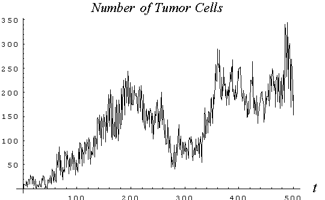
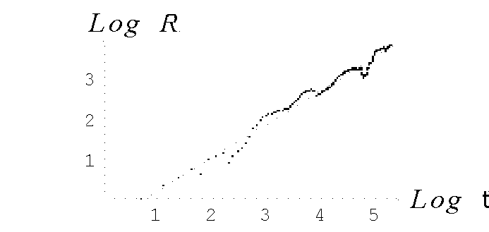
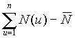
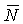
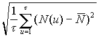
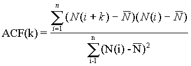
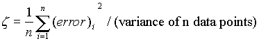

Fractal time series analysis and predictions for tumor spreading
M. V. Voitikova
Institute of Molecular&Atomic Physics, NASB, Minsk, Belarus,
voitikova@imaph.bas-net.by
Full paper in compressed Postscript *.ps.gzThe stochastic discrete space-time model of the immune response on tumor spreading has been developed. The immune+tumor evolution is considered in a two-dimensional square lattice and the immune+tumor interactions have been described at a cellular level. The model presented takes into account the immune elimination capacity, a, the growth rate, the competition for resources, q , the immune cell inactivation, b , the spontaneous and stimulated immune cell influx, j and c, respectively and then transferred into the setting of cellular automata [1], using the rule-based programming style. The rules governing the behavior of the tumor+immune system are implemented as rewrite rules for all sites of a cellular automata. The random distribution of immune cells and a tumor cell seed are used to create the initial dynamical system configuration. The multistate (immune or tumor cells) random walkers are simultaneously updated at one time step, according to the definite rules involving the state of 12 nearest neighbors at previous time step. Each immune cell has a state value determined by an orientation of a moving cell, and an indicator of a living time. Each tumor cell has a state value indicating the time till division. Note, that all growth rules are probabilistic, i.e. contains a random choice. After n-fold growth-rule applications the immune+tumor system yields a tumor cluster and a corresponding distribution of active and inactive immune cells. Three regimes of the immune response and tumor dynamics have been determined. These are i) normal wound healing, ii) uncontrolled (exponential) tumor growth, and iii) noise-like chaotic tumor-immune behavior. The third regime has been analyzed by the Hurst's approach.

The growth model presented shows that the immune response on tumor spreading in 2D-space exhibits oscillatory fluctuations (Fig.1 Number of tumor cells vs time), so the normal wound healing has a probabilistic character. The parameters chosen are: a =0.82, the time of division =4, the immune living time = 6, b = 0.3, and the immune-cell accumulation rate is 0.08.

It is shown (Fig. 2 Hurst's exponent vs number of observations) that the fractal time series of N(t) (the number of tumor cells) and L(t) (the number of leukocytes) follow the empirical law, R/S=At H , where R(t ) = max
-min is the rescale range (1nt
) ,
is the rescale range (1nt
) , 
is the mean of the series, and S(t ) =
is the standard deviation of the cell number at the interval of observation, 20 to 500. The Hurst's exponent, H, is 0.82 and A is 0.48. As is seen, the curves N(t) and L(t) have the selfaffine character with the fractal dimension, DF=2-H» 1.18. The determined value of H>0.5 indicates the strictly persistent character of the tumor growth with low noise level. The tumor growth persistency allows use the nonlinear time series analysis [3] to predict the amplitude and time of the tumor colony value at the future time intervals on the basis of the already observed data. For this purpose various measures such as autocorrelations (or power spectrum), mean square error, and average mutual information are evaluated. We have been used the delay method [4,5] to reconstruct the phase space using delay coordinate vectors derived from a time series, {N(t),t=1,...n}. We can embed this time series in a p-dimensional space by taking p-coordinates D(t)={N(t),N(t-h),...N(t-(p-1)h)}, where h is the time delay. The behavior of an autocorrelation function for lag k defined as
where n is the number of observation. As soon the autocorrelation function demonstrates the periodicity due to tumor cells division periodicity and first time drops to 1/e at k is equal 8 as we pick out lag h to be this values. The embedding dimension, p, determines the minimum number of dynamic variables needed to model the system, we choose to be 4 (p>2DF+1). For the cell number prediction at time T+1, we take the embedded point at T and look though the points that are closest to D(T). Single step prediction P(T+1) for D(T+1) is taken as the average of next to closest points. This strategy seems to be a sensitive test of the predicted values accuracy. The quality prediction measures given by normalized mean square error defined as

where errori is the difference between i-th observed and predicted values. For our task V has been found to be 0.047 that indicates on the quality of prediction.
Conclusions.
In our paper we propose cellular automata model which mimic all peculiarities of real immune-tumor system. Three regimes of the immune response and tumor dynamics have been determined which are well known in clinical experiments: normal wound healing, uncontrolled (exponential) tumor growth, and noise-like chaotic tumor-immune behavior. The third regime is dominantly deterministic and tumor growth predictions are made and tested. The state space method of recovering the dynamics of the biological system in terms of time series generated by immunity-tumor system has been proposed. The prediction quality is good and allows to construct the forecast of tumor growth.